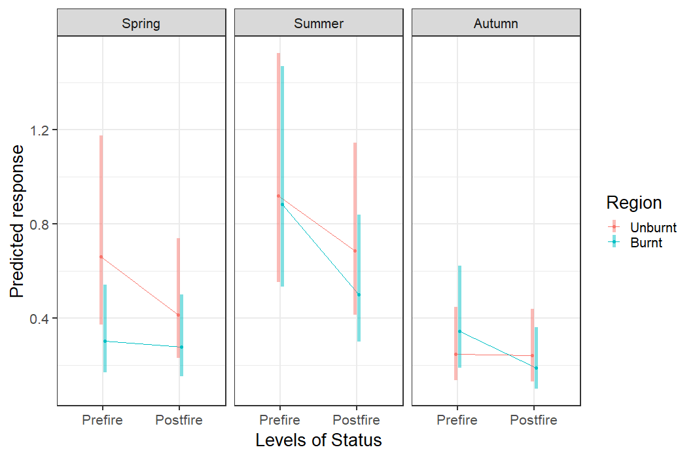
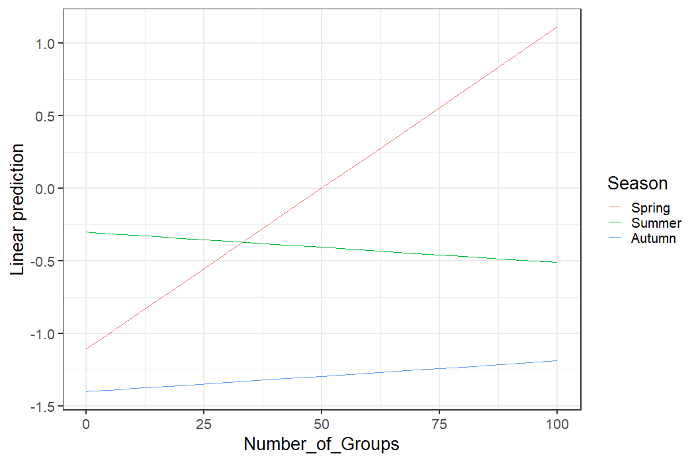
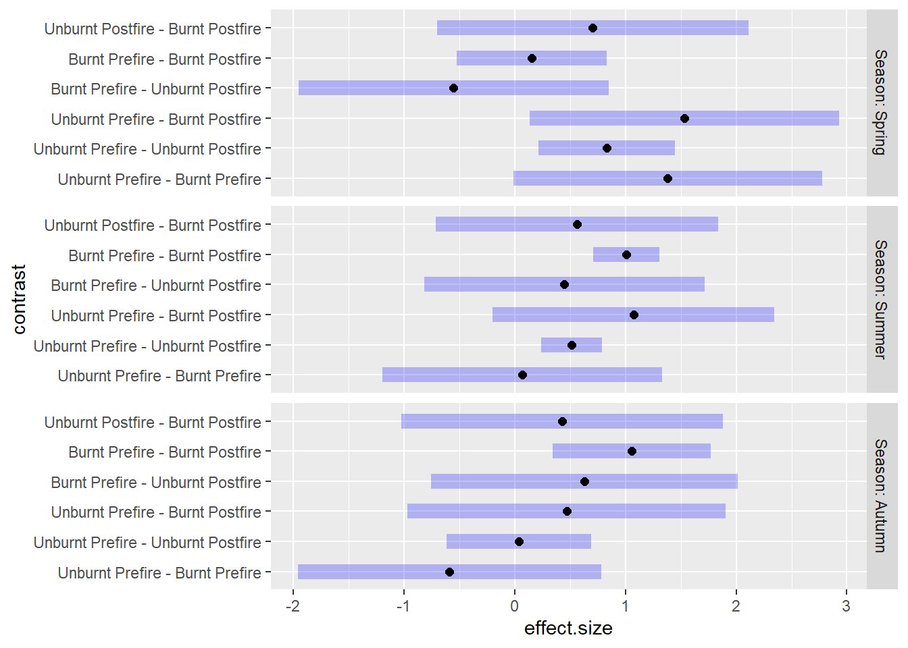
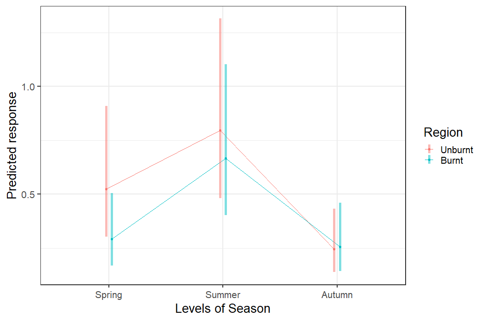
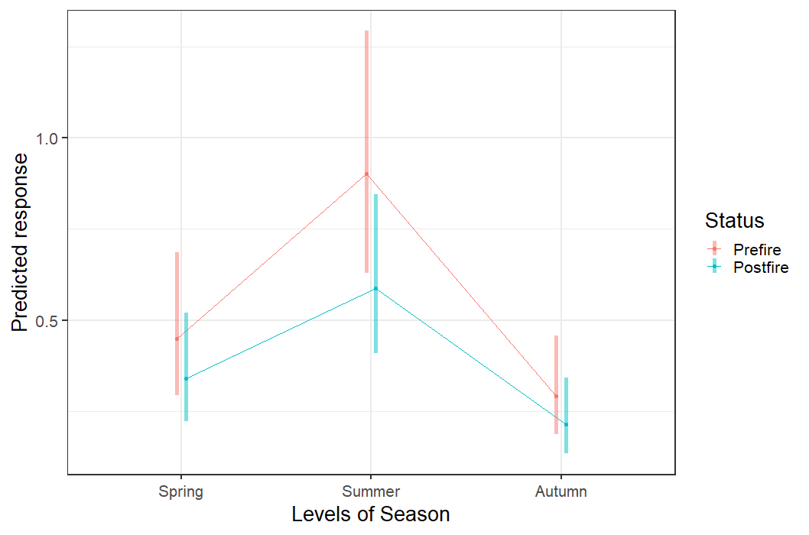
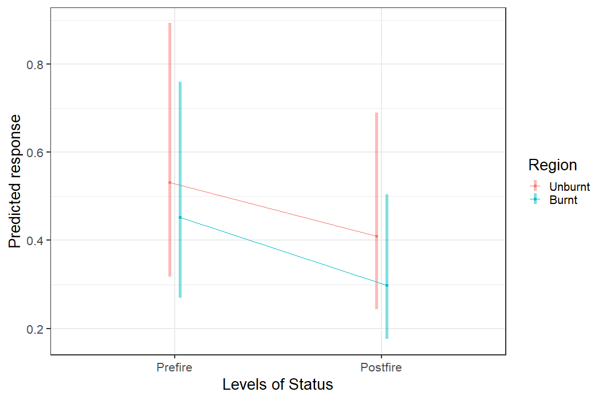

9 - Create a Visual Repersentation of the Model
library(glmmTMB)
library(ggplot2)
library(car)
library(ggeffects)
library(effects)
library(broom)
library(broom.mixed)
library(emmeans)
setwd("D:/DataAndAnalysis")
#Reading in the Final Clean Data from cleaning script 7
Bear<-read.csv("./Datasets/FinalDatasets/ForExploration/7_BlackAdultClean.csv",header=TRUE,stringsAsFactors = FALSE)
Bear$Season<-as.factor(Bear$Season)
Bear$Status<-as.factor(Bear$Status)
Bear$Region<-as.factor(Bear$Region)
Bear$Season<- factor(Bear$Season,levels = c("Spring","Summer","Autumn"))
Bear$Status<-relevel(Bear$Status,"Prefire")
Bear$Region<-relevel(Bear$Region,"Unburnt")
#Creating final model. Model selection found in script 1_AdultBlackBearModelFit
FinalModel<-glmmTMB(Lone_Adult ~ Region + Season + Status + Number_of_Groups + Number_of_Groups*Season + Season*Status + Season*Region + Region*Status + Season*Region*Status +
offset(log(Effort_per_week)) + (1|Camera_Code),
data = Bear,
ziformula = ~Season,
na.action = na.pass,
family = nbinom1(link = "log"))Visualizing the three-way interaction of Season:Status:Region
I will be using the function emmip to create interaction plots of the estimated margnial means based on the fitted model. This is from the package emmeans
ThreeWayInteractionPlot<-emmip(FinalModel,~Region~Status|Season, CIs = TRUE, type = "re") +
theme_bw(base_size = 20)
Interpretation
The above plot shows that in all three seasons there are decreases in bear use intensity in the postfire landscape, however, the magnitude of these decreases vary based on both region and season. It appears that in each season there is not a significant decrease between prefire and postfire bear intensity for any region however this is at odds with the emmeans output from section 08.
I need to look more at the response variable here compared to the table in section 8. These estimates do not appear to match up and therefore I think I need to look further into this.
Visualizing the two-way human use and season interaction
HumanSeason<-emmip(FinalModel, Season ~ Number_of_Groups, at = list(Number_of_Groups = c(0,1,5,10,15,20,30,40,50,60,70,80,90,100), CIs = TRUE, type = "re"))+
theme_bw(base_size = 20)
Interpretation
As we can see in the plot above there is very different effects of the number of human groups on bear use intensity along all of the seasons. Both spring and autumn see a positive relationship of human usage and bear usage while summer sees a negative relationship. I think that a reason we may see the positive relationships in spring and autumn is that generally both humans and bears will be more active during the nicer portions of the seasons. In early spring for example few humans will be hiking on trails and bears may still be denned or will only start emerging from dens. As spring warms more humans will be hiking and more bears will be leaving their dens in search of food.
Effect Size
The following code plots the effect sizes of each contrast using the function eff_size from the package emmeans.
emm3<-emmeans(FinalModel,spec = ~ Region:Status|Season, type = "response")
EFF1<-eff_size(emm3, sigma = sigma(FinalModel), edf = Inf, method = "pairwise")
plot(EFF1)
Interpretation
I am unsure how to interpret the results from the effect size function at this time. I had originally thought that by back transforming my emmeans (as above) I had received my effect sizes, however, these differ from the effect size function found above. I assume that these values should be the same however that may be incorrect and I will look into that further.
Plotting all other included interaction terms
I do not think that the other plots on this page will be as important as those above becuase those above are the highest ordered interactions. I will still present the interactions below incase they are usefull.
RegionSeason<-emmip(FinalModel, Region~Season, CIs = TRUE, type = "re") +
theme_bw(base_size = 20)
StatusSeason<-emmip(FinalModel, Status~Season, CIs = TRUE, type = "re") +
theme_bw(base_size = 20)
RegionStatus<-emmip(FinalModel, Region~Status, CIs = TRUE, type = "re") +
theme_bw(base_size = 20)